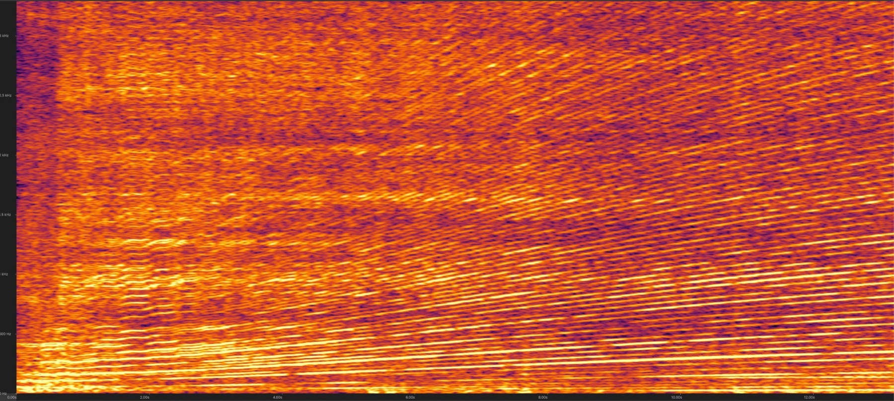
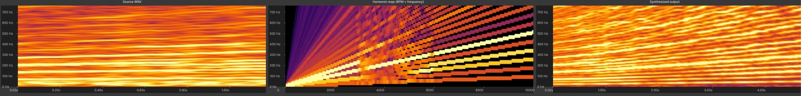
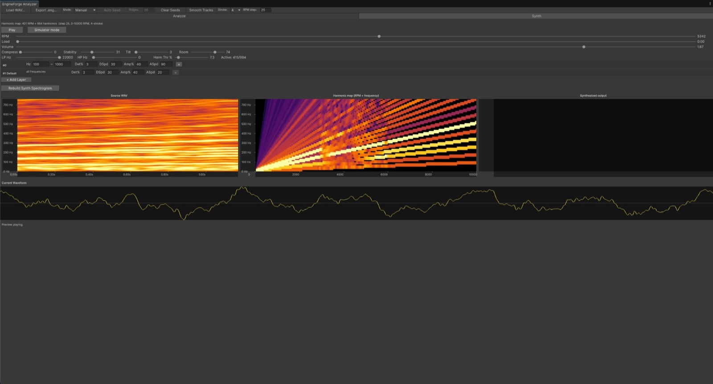
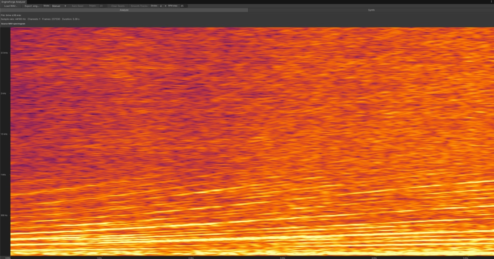

Realistic engine sound synthesis from real recordings.
No samples, no crossfades - sound is generated in real time.
While every other engine sound asset on Unity stitches together recorded samples, Fubos takes a different path: it's the first engine sound synthesizer for Unity built on additive resynthesis. Sound is generated in real time, with no samples and no crossfades.
An engine sound is a stack of harmonics. As RPM and load change, some of them get louder and others fade - that balance is what makes every engine recognizable, and it is very hard to fake from scratch.
So Fubos doesn't fake it. You give the Analyzer a real recording - one smooth
acceleration from minimum to maximum RPM - and it tracks each harmonic across the
whole sweep into an .eng file. The synthesizer plays that profile back
in real time, reshaping the sound to match the current RPM and load. Every cycle is
unique, and transitions between RPMs stay smooth.
Record it yourself or take a suitable video from YouTube. Two rules: smooth acceleration from minimum to maximum RPM without gear shifts, and constant distance between the engine and the mic.
Load the WAV in the Analyzer, pick the harmonics on the spectrogram and export an .eng engine map. The status bar shows the detected RPM range, so you can check the selection against the real recording.
Feed the synthesizer two values at runtime: RPM from your own engine model, and load - if you don't compute load explicitly, just feed the throttle value (0–1).



Load a WAV, see its spectrogram, pick the harmonics. In manual mode you click the clearest harmonic line, then the adjacent one - the spacing between them maps the recording to engine RPM. Auto mode (experimental) works well on high-quality recordings.
Listen before using: set RPM and load by hand, or turn on simulator mode - a virtual gas pedal with idle RPM and response settings.
Compression that evens out harmonic loudness, tilt EQ for the overall slope, low-pass and high-pass bounds, plus experimental Stability and Room cleanup for noisy or echoey recordings.
Plain additive synthesis sounds like a looped recording or a buzz-saw. To avoid that, every harmonic plays with small randomization in frequency and amplitude - with separate layers for different frequency bands.
The host GameObject needs an AudioSource - Unity uses it to play the rendered samples and apply spatial settings, reverb and doppler. 2-stroke and 4-stroke engines are supported, rotary is planned.
Burst-compiled, vectorized math, zero runtime allocations.
Ready-to-use profiles - Italian V6, Italian V12, Japan I4, Japan I6, V8 and more - plus a demo scene with a simple car, and complete PDF documentation covering every parameter with usage examples.
EngineSynth takes the engine asset and renders audio on Unity's
audio thread. Render() must be called from
OnAudioFilterRead, and it needs three values:
rpm, load and volume.
The exported .eng file just needs to be dropped anywhere under
Assets/ - it imports automatically, no manual setup.
A ready-to-use EngineSound wrapper ships with the package
in the sample scene.
private EngineSynth _synth;
private void Start()
{
_synth = new EngineSynth(profile);
}
private void OnAudioFilterRead(float[] data, int channels)
{
var p = new EngineSynthParams {
rpm = _rpm, load = _load, volume = _volume
};
_synth.Render(data, channels, p);
}
private void OnDestroy()
{
_synth?.Dispose();
}Questions, feedback, or want to share what you've built? Join the Discord.